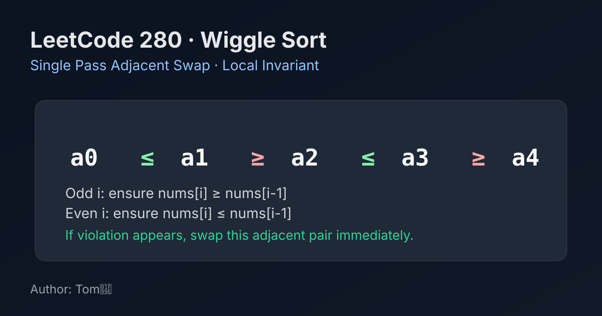

LeetCode 280: Wiggle Sort (Single Pass Adjacent Swap)
LeetCode 280ArrayGreedyToday we solve LeetCode 280 - Wiggle Sort.
Source: https://leetcode.com/problems/wiggle-sort/

English
Problem Summary
Given an integer array nums, reorder it in-place so that it satisfies the wiggle pattern:
nums[0] <= nums[1] >= nums[2] <= nums[3] ...
Key Insight
We only need a local invariant at each index. At odd index i, we need nums[i] >= nums[i-1]; at even index i, we need nums[i] <= nums[i-1]. If a pair violates the rule, swap the adjacent elements immediately. This local fix never breaks earlier positions.
Algorithm
- Scan from left to right, starting at i = 1.
- If i is odd and nums[i] < nums[i-1], swap them.
- If i is even and nums[i] > nums[i-1], swap them.
- Continue until end of array.
Complexity Analysis
Time: O(n).
Space: O(1).
Common Pitfalls
- Sorting first is unnecessary (that would be O(n log n)).
- Mixing strict and non-strict comparisons when duplicates exist.
- Forgetting this problem asks for any valid wiggle order, not lexicographically smallest.
Reference Implementations (Java / Go / C++ / Python / JavaScript)
class Solution {
public void wiggleSort(int[] nums) {
for (int i = 1; i < nums.length; i++) {
boolean oddIndexNeedGreater = (i % 2 == 1) && nums[i] < nums[i - 1];
boolean evenIndexNeedSmaller = (i % 2 == 0) && nums[i] > nums[i - 1];
if (oddIndexNeedGreater || evenIndexNeedSmaller) {
int tmp = nums[i];
nums[i] = nums[i - 1];
nums[i - 1] = tmp;
}
}
}
}func wiggleSort(nums []int) {
for i := 1; i < len(nums); i++ {
oddIndexNeedGreater := i%2 == 1 && nums[i] < nums[i-1]
evenIndexNeedSmaller := i%2 == 0 && nums[i] > nums[i-1]
if oddIndexNeedGreater || evenIndexNeedSmaller {
nums[i], nums[i-1] = nums[i-1], nums[i]
}
}
}class Solution {
public:
void wiggleSort(vector<int>& nums) {
for (int i = 1; i < (int)nums.size(); ++i) {
bool oddIndexNeedGreater = (i % 2 == 1) && nums[i] < nums[i - 1];
bool evenIndexNeedSmaller = (i % 2 == 0) && nums[i] > nums[i - 1];
if (oddIndexNeedGreater || evenIndexNeedSmaller) {
swap(nums[i], nums[i - 1]);
}
}
}
};class Solution:
def wiggleSort(self, nums: List[int]) -> None:
for i in range(1, len(nums)):
odd_index_need_greater = (i % 2 == 1 and nums[i] < nums[i - 1])
even_index_need_smaller = (i % 2 == 0 and nums[i] > nums[i - 1])
if odd_index_need_greater or even_index_need_smaller:
nums[i], nums[i - 1] = nums[i - 1], nums[i]var wiggleSort = function(nums) {
for (let i = 1; i < nums.length; i++) {
const oddIndexNeedGreater = (i % 2 === 1) && (nums[i] < nums[i - 1]);
const evenIndexNeedSmaller = (i % 2 === 0) && (nums[i] > nums[i - 1]);
if (oddIndexNeedGreater || evenIndexNeedSmaller) {
[nums[i], nums[i - 1]] = [nums[i - 1], nums[i]];
}
}
};中文
题目概述
给定整数数组 nums，原地重排，使其满足摆动序列：
nums[0] <= nums[1] >= nums[2] <= nums[3] ...
核心思路
关键是维护局部不变量。对于奇数下标 i，应有 nums[i] >= nums[i-1]；对于偶数下标 i，应有 nums[i] <= nums[i-1]。一旦当前相邻对不满足，就立刻交换这两个元素。这个局部修复不会破坏前面已经满足的结构。
算法步骤
- 从左到右遍历，i 从 1 开始。
- 若 i 为奇数且 nums[i] < nums[i-1]，交换两者。
- 若 i 为偶数且 nums[i] > nums[i-1]，交换两者。
- 遍历结束即可得到一个合法摆动序列。
复杂度分析
时间复杂度：O(n)。
空间复杂度：O(1)。
常见陷阱
- 先排序再处理虽然可行，但不是最优。
- 有重复值时比较符号写错（应使用允许相等的关系）。
- 误以为需要唯一答案；实际上只需任意满足条件的重排。
多语言参考实现（Java / Go / C++ / Python / JavaScript）
class Solution {
public void wiggleSort(int[] nums) {
for (int i = 1; i < nums.length; i++) {
boolean oddIndexNeedGreater = (i % 2 == 1) && nums[i] < nums[i - 1];
boolean evenIndexNeedSmaller = (i % 2 == 0) && nums[i] > nums[i - 1];
if (oddIndexNeedGreater || evenIndexNeedSmaller) {
int tmp = nums[i];
nums[i] = nums[i - 1];
nums[i - 1] = tmp;
}
}
}
}func wiggleSort(nums []int) {
for i := 1; i < len(nums); i++ {
oddIndexNeedGreater := i%2 == 1 && nums[i] < nums[i-1]
evenIndexNeedSmaller := i%2 == 0 && nums[i] > nums[i-1]
if oddIndexNeedGreater || evenIndexNeedSmaller {
nums[i], nums[i-1] = nums[i-1], nums[i]
}
}
}class Solution {
public:
void wiggleSort(vector<int>& nums) {
for (int i = 1; i < (int)nums.size(); ++i) {
bool oddIndexNeedGreater = (i % 2 == 1) && nums[i] < nums[i - 1];
bool evenIndexNeedSmaller = (i % 2 == 0) && nums[i] > nums[i - 1];
if (oddIndexNeedGreater || evenIndexNeedSmaller) {
swap(nums[i], nums[i - 1]);
}
}
}
};class Solution:
def wiggleSort(self, nums: List[int]) -> None:
for i in range(1, len(nums)):
odd_index_need_greater = (i % 2 == 1 and nums[i] < nums[i - 1])
even_index_need_smaller = (i % 2 == 0 and nums[i] > nums[i - 1])
if odd_index_need_greater or even_index_need_smaller:
nums[i], nums[i - 1] = nums[i - 1], nums[i]var wiggleSort = function(nums) {
for (let i = 1; i < nums.length; i++) {
const oddIndexNeedGreater = (i % 2 === 1) && (nums[i] < nums[i - 1]);
const evenIndexNeedSmaller = (i % 2 === 0) && (nums[i] > nums[i - 1]);
if (oddIndexNeedGreater || evenIndexNeedSmaller) {
[nums[i], nums[i - 1]] = [nums[i - 1], nums[i]];
}
}
};
Comments